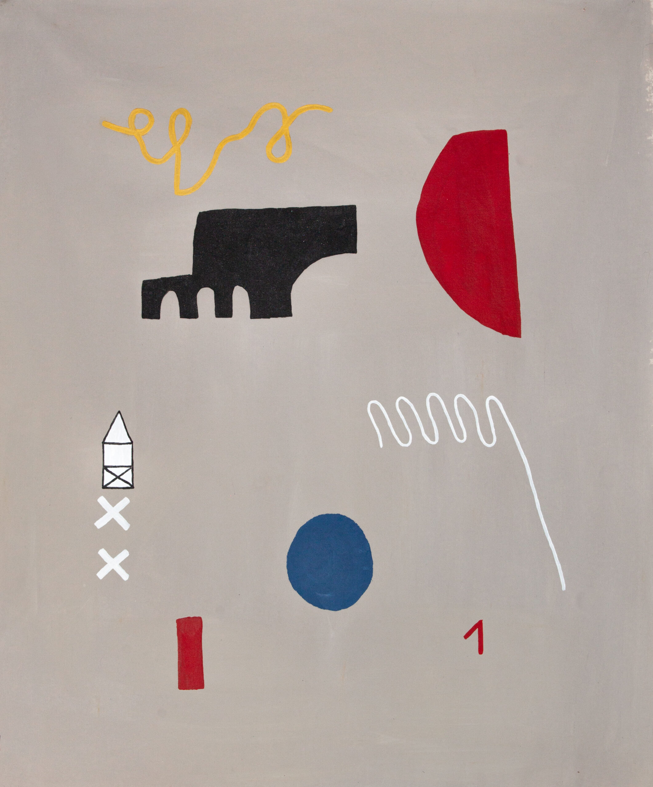
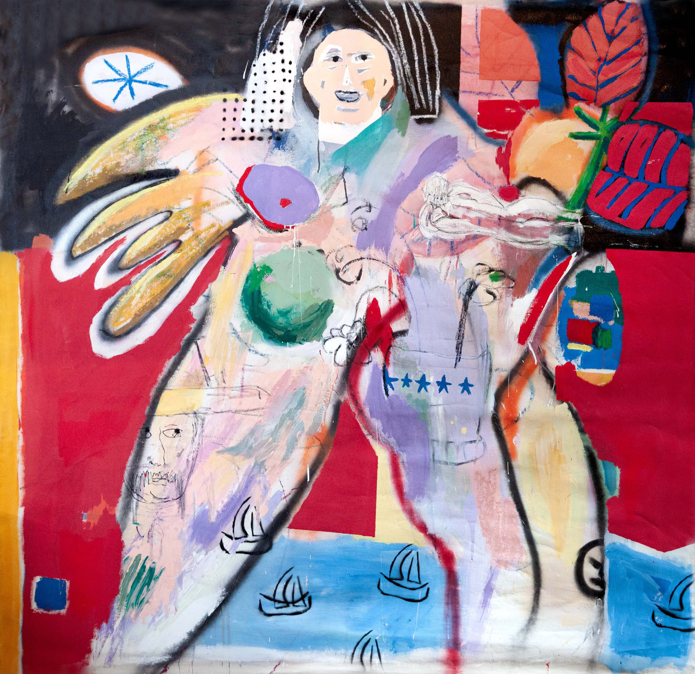
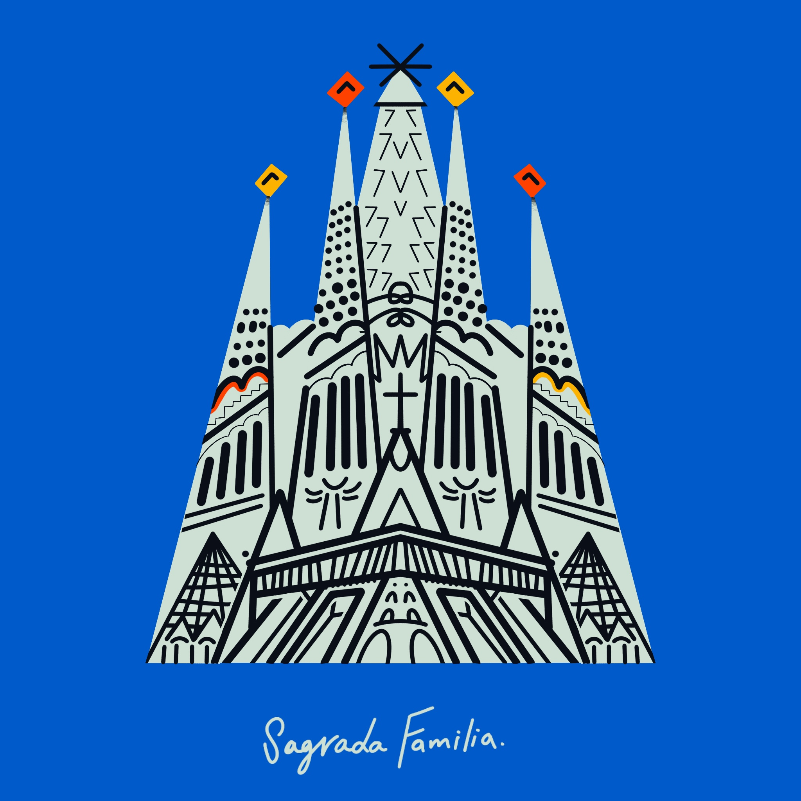
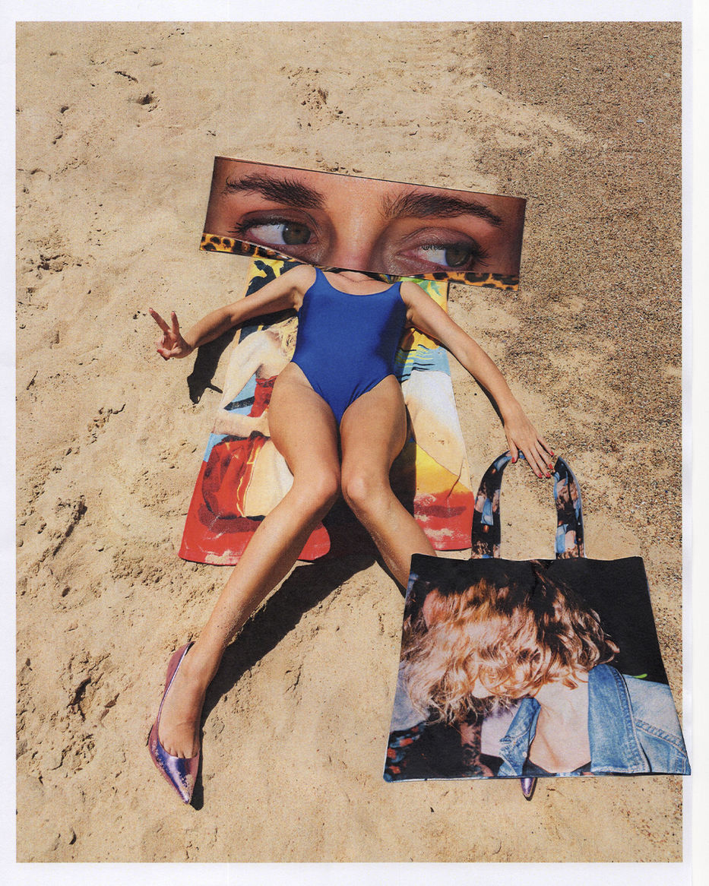
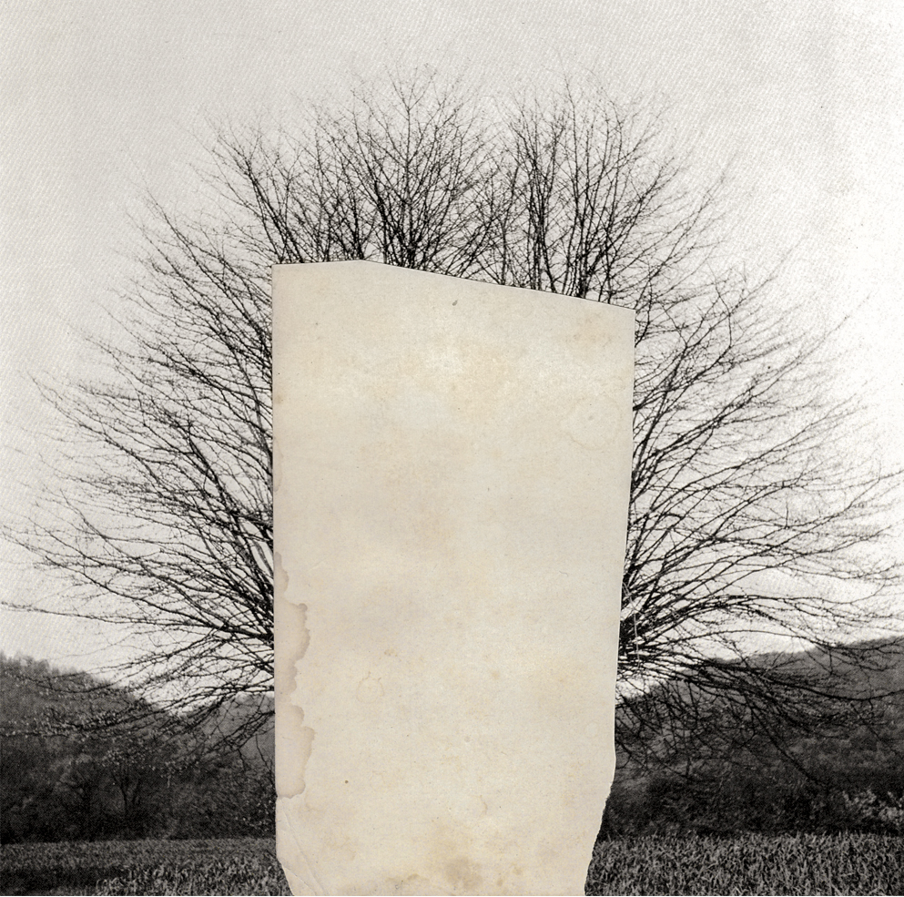

Artistas

Ela Monstruo
Sus obras son mayormente pinturas pero también hace collage y mezcla ambas técnicas. La artistia
busca re-significar la experiencia sensible a través de la relación con todo lo que la rodea y
le traspasa. Las obras parten de una ilustración digital y se reproducen en lienzo a demanda, sin
límite.
Ver obras

Alfonso Reyes
Formado como arquitecto y con una gran atracción por el arte, explora el arte de
forma muy expresiva y llena de color. Él pretende generar una ridiculización de las situaciones del
día a día, y también una relfexión. La connotación se la da el espectador ya que la obra es estática
y
la mente no.
Ver obras

Pablo Ferreira
Diseñador gráfico y artista, más conocido como "los dibujitos de Pablo". Tiene un estilo en el
que resalta el manejo del color y los trazos definidos. Hace obras digitales y también hace series
en acrílico.
Estas últimas son más abstractas pero mantienen esos rasgos únicos.
Ver obras

Majo Casacó
Ella se define a sí misma como una artista para artistas. Su arte varía desde el sacar fotos,
hasta hacer collages con esas impresiones, o mismo estampar esas fotografías y hacer tote bags.
Le apasiona lo que es la cultura pop, la desprolijidad, las letras y la moda.
Ver obras

Juan Fielitz
Es artista visual, diseñador gráfico y docente de diseño radicado en Montevideo.Sus obras son
fotografías y collages muy minimalistas y generalmente en blanco y negro. Esto le da un toque
moderno único. Son bastante simbólicas y
se podría decir que hasta dadístas en cierta forma.
Ver obras